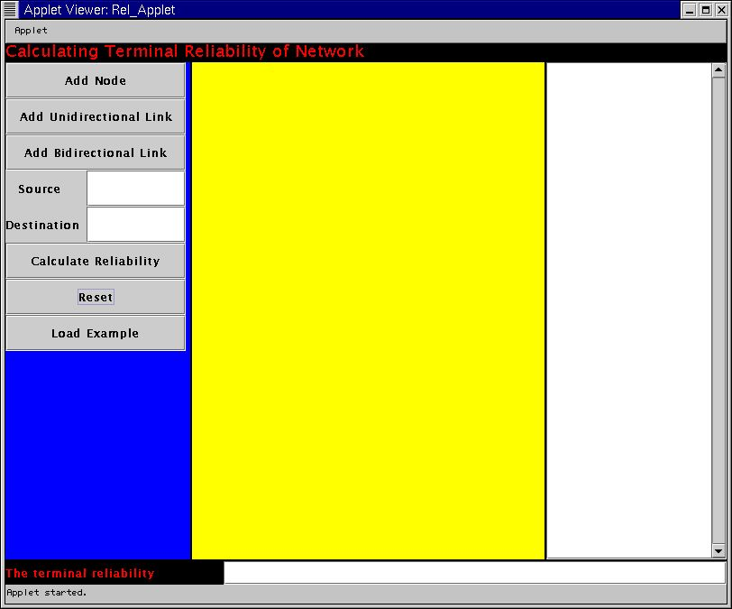
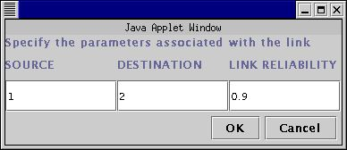
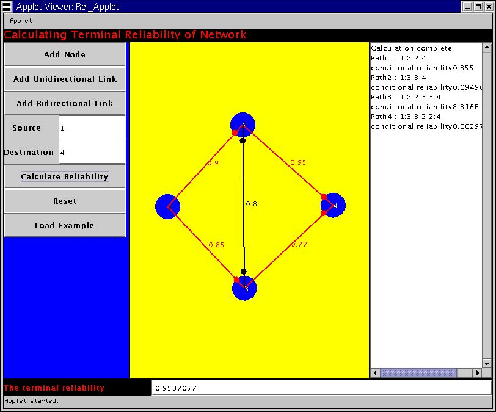

Calculation of Terminal Reliability for Two Nodes
in a Network
This is a tool for calculating the terminal reliability of a network. It
takes as input the network topology and the reliability of each link within
the network and calculates the the terminal reliability between any two
nodes in the network. The nodes themselves are considered to be fault free
for the purpose of this calculation. However , we can account for the node
failures by changing the
reliability of the associated links accordingly .This tool doesnot
have any restriction on the number of nodes or links that the user wants
to specify. The computation time would however increase as more and more
complex networks are specified. So the user is advised to have a little
more patience in those scenarios.
The algorithm that has been used is SYREL : A
Symbolic Reliability Algorithm Based on Path and Cutset Methods.
This was authored by Salim Hariri and C.S.Raghavendra
in IEEE Transactions on Computers , VOL. C-36, NO.
10, OCTOBER 1987. The user is encouraged to
read the paper to get an insight into the algorithm that has been implemented
if he so desires.
If you are using the tool for the first time it is strongly suggested
that you read step by step through the manual presented below . If comfortable
go ahead and use the tool.
Terminal Reliability Calculation Tool
Manual for Using this Tool
The user will be taken through a step by step procedure to clarify how
the tool works. An example is considered here which consists of 4 nodes
configured as shown in the figure below.
Introduction
Adding Nodes
Adding Unidirectional Link
Adding Bidirectional Link
Specifying Source
Specifying Destination
Calculating Reliability
Extra Editing Options
Attaching Java Plug-In
Introduction
The tool comes up with a Graphical User Interface for specifying the Parameters.
The GUI has several buttons and text areas for input and output. Each of
those components are explained below.
The snapshot of the initial setting is presented below.

Adding Nodes
-
Press the Add Node Button. This enables the
users to specify the nodes within the main canvas.
-
Press your mouse anywhere within the yellow region that is the main canvas
for specifying network topology.
This creates the nodes that are in the network. The user has to press the
Add Node button everytime he wants to add a node in the network. The nodes
are numbered sequentially. Please note that every time the user wants to
add a node he has to press the Add Node button and then click on the required
position of the drawing canvas.
In the example, the Add Node button has to be clicked four times each
time followed by a click in the specific position of the canvas which does
the node placements.
Adding Unidirectional Link
-
Press the Add Unidirectional Link Button.
A window will pop up that will ask for user input.
-
The user has to specify the source Node ID , destination Node ID and the
probability that the link will be fault-free.
This creates the unidirectional links in the network. For example, the
input for the link between Node 1 and Node 2 having link reliability of
0.9 is shown below. The link is represented by a red line from the source
to the destination and the destination is indicated by a red circle near
it's vicinity.

Adding Bidirectional Link
-
Press the Add Bidirectional Link Button. A
similar window like the previous case will pop up.
-
The user has to specify the input in the same way as before.
This creates bidirectional link between the source and the destination.
This is represented by a black line with circles near both the source and
the destination nodes.
Specifying the Source Terminal
The user has to type the ID of the source node in the textfield position
next to the Source.
In our example, we specify the Node 1 as the input.The corresponding
Window is shown below.
Specifying the Destination
Terminal
The user has to type the ID of the destination node in the text field position
next to the Destination.
In our example, we specify the Node 4 as this input. Th corresponding
Window is shown below.
Calculating the Reliability
-
Press the Calculate Reliability Button.
This will calculate the Terminal Reliability between the source and the
destination as specified in the windows mentioned before.
Interpreting the Output
Once this user has pressed the option for calculating the reliability he
will get some the output in two places . In the textfield near the terminal
reliability window the output will show the overall terminal reliability
that was calculated for that particular network topology. In addition there
is a textarea in the right side . This shows the many different paths that
can be there between the source and the destination. The conditional reliability
of each path (given that the previous paths are not functional) is
displayed . The final window after calculating reliability is shown below.

Extra Editing Options
Resetting
This clears all the previous input parameters and the user has to do the
entire run right from the scratch.
To run the Example
An example has been already put in place. The user has to press the Load
Example window and has to then press the Calculate Reliability button
to calculate the reliability .
Attaching Java Plug-In
The tool has been developed as an applet that uses Java Swing package.
As a result in order to run this applet properly JRE-1.3 with the Java
Plug In needs to be supported in your browser.
In case your browser doesnot support this plug-in currently it is important
to load the plug-in. It is easy to do by following the instructions written
below. You can also refer to the java website of the SUN to get a indepth
procedure of how to load this applet.
Download the JRE
ver 1.3.1
If you are using the Linux OS , it is recommended that you download
the RPM script. Follow the instructions
to install the RPM properly.
You need to add the path of the directory that contains the plug-in
in the NPX_PLUGIN_PATH.
For example , if you use the bash shell , add the following line
in the bashrc and using netscape 4.x
export NPX_PLUGIN_PATH=<jre>/plugin/i386/ns4
where , <jre> is the path of the top level directory of your Java
2 Runtime Environment installation.
You need to close the netscape and restart it and again close it and
restart to embed the plugin properly. Closing and restarting twice is very
important to take care of a bug in Netscape
Right, now you are all set to use
Please send any feedback or bug-report to Diganta